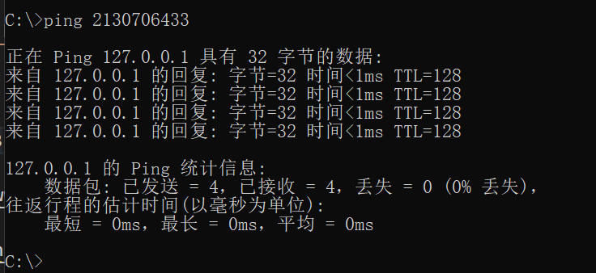

# SSRF 的定义与成因
SSRF (Server-Side Request Forgery: 服务器端请求伪造) 是一种由攻击者构造形成由服务端发起请求的一个安全漏洞。一般情况下，SSRF 攻击的目标是从外网无法访问的内部系统。（正是因为它是由服务端发起的，所以它能够请求到与它相连而与外网隔离的内部系统）
SSRF 形成的原因大都是由于服务端提供了从其他服务器应用获取数据的功能且没有对目标地址做过滤与限制。比如从指定 URL 地址获取网页文本内容，加载指定地址的图片，下载等等。
注释：除了 http/https 等方式可以造成 ssrf，类似 tcp connect 方式也可以探测内网一些 ip 的端口是否开发服务，只不过危害比较小而已。
# 可能出现的地方
1. 社交分享功能：获取超链接的标题等内容进行显示
2. 转码服务：通过 URL 地址把原地址的网页内容调优使其适合手机屏幕浏览
3. 在线翻译：给网址翻译对应网页的内容
4. 图片加载 / 下载：例如富文本编辑器中的点击下载图片到本地；通过 URL 地址加载或下载图片
5. 图片 / 文章收藏功能：主要其会取 URL 地址中 title 以及文本的内容作为显示以求一个好的用具体验
6. 云服务厂商：它会远程执行一些命令来判断网站是否存活等，所以如果可以捕获相应的信息，就可以进行 ssrf 测试
7. 网站采集，网站抓取的地方：一些网站会针对你输入的 url 进行一些信息采集工作
8. 数据库内置功能：数据库的比如 mongodb 的 copyDatabase 函数
9. 邮件系统：比如接收邮件服务器地址
10. 编码处理，属性信息处理，文件处理：比如 ffpmg，ImageMagick，docx，pdf，xml 处理器等
11. 未公开的 api 实现以及其他扩展调用 URL 的功能：可以利用 google 语法加上这些关键字去寻找 SSRF 漏洞
一些的 url 中的关键字：share、wap、url、link、src、source、target、u、3g、display、sourceURl、imageURL、domain……
12. 从远程服务器请求资源（upload from url 如 discuz！；import & expost rss feed 如 web blog；使用了 xml 引擎对象的地方 如 wordpress xmlrpc.php）
# 漏洞验证
1. 排除法：浏览器 f12 查看源代码看是否是在本地进行了请求
比如：该资源地址类型为 http://www.xxx.com/a.php?image=（地址） 的就可能存在 SSRF 漏洞
2.dnslog 等工具进行测试，看是否被访问
-- 可以在盲打后台用例中将当前准备请求的 uri 和参数编码成 base64，这样盲打后台解码后就知道是哪台机器哪个 cgi 触发的请求。
3. 抓包分析发送的请求是不是由服务器的发送的，如果不是客户端发出的请求，则有可能是，接着找存在 HTTP 服务的内网地址
-- 从漏洞平台中的历史漏洞寻找泄漏的存在 web 应用内网地址
-- 通过二级域名暴力猜解工具模糊猜测内网地址
4. 直接返回的 Banner、title、content 等信息
5. 留意 bool 型 SSRF
# 利用方式
1. 让服务端去访问相应的网址
2. 让服务端去访问自己所处内网的一些指纹文件来判断是否存在相应的 cms
3. 可以使用 file、dict、gopher [11]、ftp 协议进行请求访问相应的文件
4. 攻击内网 web 应用（可以向内部任意主机的任意端口发送精心构造的数据包 {payload}）
5. 攻击内网应用程序（利用跨协议通信技术）
6. 判断内网主机是否存活：方法是访问看是否有端口开放
7.DoS 攻击（请求大文件，始终保持连接 keep-alive always）
# 绕过限制方法
详细绕过参考 ----->https://www.secpulse.com/archives/65832.html
1. http://xxxx.com@www.baidu.com/ 与 http://www.baidu.com/ 请求时是相同的
2. 各种 IP 地址的进制转换
可以是十六进制，八进制等。
115.239.210.26 >>> 16373751032
首先把这四段数字给分别转成 16 进制，结果：73 ef d2 1a
然后把 73efd21a 这十六进制一起转换成 8 进制
记得访问的时候加 0 表示使用八进制 (可以是一个 0 也可以是多个 0 跟 XSS 中多加几个 0 来绕过过滤一样)，十六进制加 0x
127.0.0.1 => 2130706433

3.URL 跳转绕过： http://www.hackersb.cn/redirect.php?url=http://192.168.0.1/
4. 短网址绕过 http://t.cn/RwbLKDx
短网址原理请参考 http://www.veryitman.com/2019/11/24 / 短地址原理 /
5.xip.io 来绕过： http://xxx.192.168.0.1.xip.io/ == 192.168.0.1 (xxx 任意）
指向任意 ip 的域名：xip.io (37signals 开发实现的定制 DNS 服务)
6. 限制了子网段，可以加 :80 端口绕过。 http://tieba.baidu.com/f/commit/share/openShareApi?url=http://10.42.7.78:80
7. 探测内网域名，或者将自己的域名解析到内网 ip
8. 例如 http://10.153.138.81/ts.php , 修复时容易出现的获取 host 时以 / 分割来确定 host，
但这样可以用 http://abc@10.153.138.81/ 绕过
9. 利用 Enclosed alphanumerics
利用Enclosed alphanumerics
ⓔⓧⓐⓜⓟⓛⓔ.ⓒⓞⓜ >>> example.com
List:
① ② ③ ④ ⑤ ⑥ ⑦ ⑧ ⑨ ⑩ ⑪ ⑫ ⑬ ⑭ ⑮ ⑯ ⑰ ⑱ ⑲ ⑳
⑴ ⑵ ⑶ ⑷ ⑸ ⑹ ⑺ ⑻ ⑼ ⑽ ⑾ ⑿ ⒀ ⒁ ⒂ ⒃ ⒄ ⒅ ⒆ ⒇
⒈ ⒉ ⒊ ⒋ ⒌ ⒍ ⒎ ⒏ ⒐ ⒑ ⒒ ⒓ ⒔ ⒕ ⒖ ⒗ ⒘ ⒙ ⒚ ⒛
⒜ ⒝ ⒞ ⒟ ⒠ ⒡ ⒢ ⒣ ⒤ ⒥ ⒦ ⒧ ⒨ ⒩ ⒪ ⒫ ⒬ ⒭ ⒮ ⒯ ⒰ ⒱ ⒲ ⒳ ⒴ ⒵
Ⓐ Ⓑ Ⓒ Ⓓ Ⓔ Ⓕ Ⓖ Ⓗ Ⓘ Ⓙ Ⓚ Ⓛ Ⓜ Ⓝ Ⓞ Ⓟ Ⓠ Ⓡ Ⓢ Ⓣ Ⓤ Ⓥ Ⓦ Ⓧ Ⓨ Ⓩ
ⓐ ⓑ ⓒ ⓓ ⓔ ⓕ ⓖ ⓗ ⓘ ⓙ ⓚ ⓛ ⓜ ⓝ ⓞ ⓟ ⓠ ⓡ ⓢ ⓣ ⓤ ⓥ ⓦ ⓧ ⓨ ⓩ
⓪ ⓫ ⓬ ⓭ ⓮ ⓯ ⓰ ⓱ ⓲ ⓳ ⓴
⓵ ⓶ ⓷ ⓸ ⓹ ⓺ ⓻ ⓼ ⓽ ⓾ ⓿
# 漏洞示例
1.Wordpress3.5.1 以下版本 xmlrpc.php pingback 的缺陷与 ssrf
2.discuz！的 ssrf （利用 php 的 header 函数来绕过，其实就是 302 跳转实现协议转换）
3.weblogic 的 ssrf
.....
# 漏洞修复
1. 禁止跳转
2. 过滤返回信息，验证远程服务器对请求的响应是比较容易的方法。如果 web 应用是去获取某一种类型的文件。那么在把返回结果展示给用户之前先验证返回的信息是否符合标准。
3. 禁用不需要的协议，仅仅允许 http 和 https 请求。可以防止类似于 file://, gopher://, ftp:// 等引起的问题
4. 设置 URL 白名单或者限制内网 IP（使用 gethostbyname () 判断是否为内网 IP）
5. 限制请求的端口为 http 常用的端口，比如 80、443、8080、8090
6. 统一错误信息，避免用户可以根据错误信息来判断远端服务器的端口状态。
# Reference
https://xz.aliyun.com/t/2115
http://bobao.360.cn/learning/detail/240.html
https://www.secpulse.com/archives/65832.html